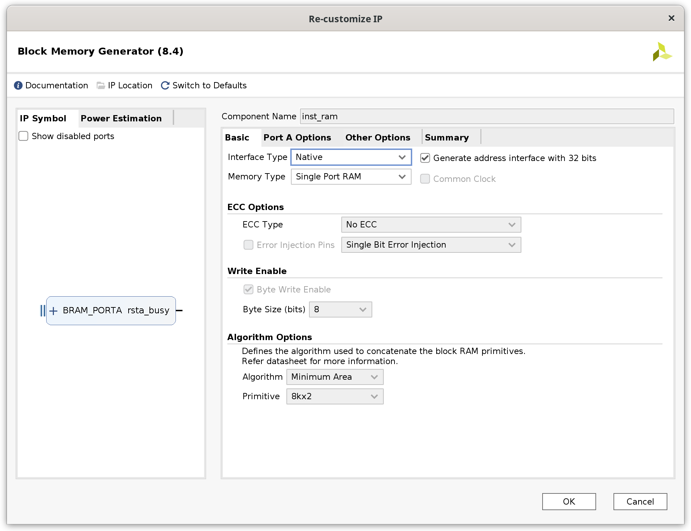
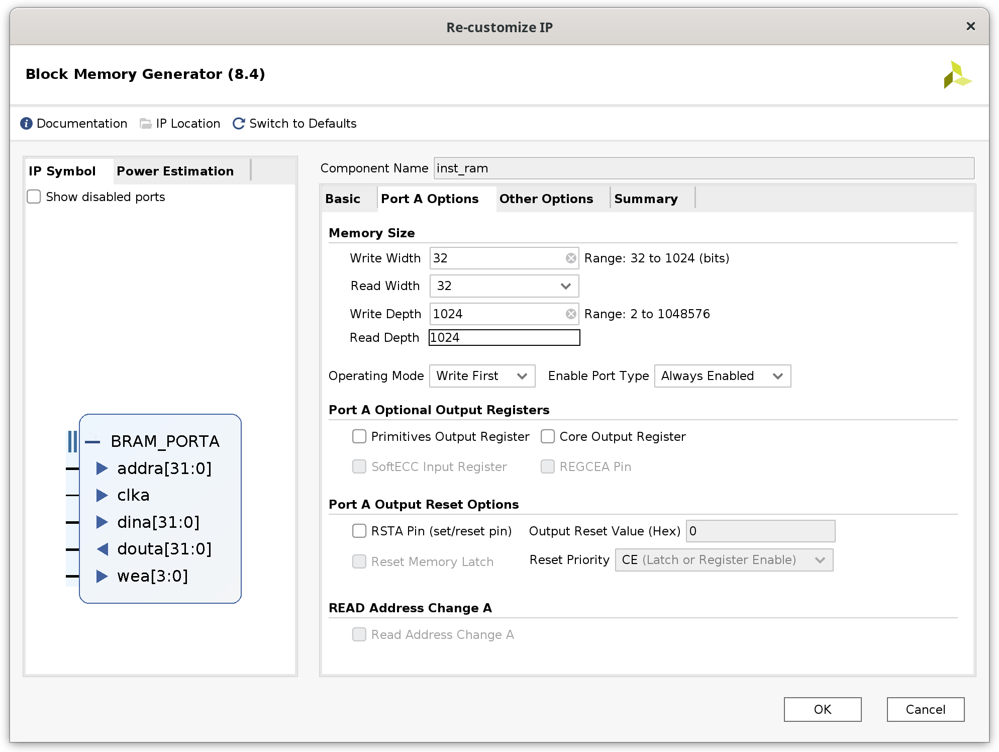
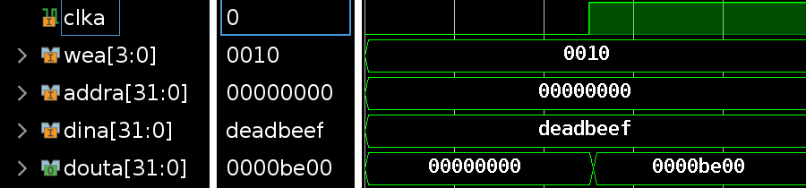

常见问题¶
0. Vivado运行卡死¶
1. iram/dram在多次IP核升级后出现离奇问题（Lab4）¶
解决方法：删除IP核，并按照以下设置重新设置存储器：


之后在Other Options中载入coe即可。
还需要注意的是，如果Lab4使用老版本的文件，建议把top文件中inst_ram和data_ram连接改为以下形式（注意保留你的时钟取反方式）：
inst_ram inst_ram
(
.clka (clk ),
.wea (4'd0 ),
.addra (cpu_inst_addr ),
.dina (32'd0 ),
.douta (cpu_inst_rdata )
);
data_ram data_ram
(
.clka (clk ),
.wea (cpu_data_wea ),
.addra (cpu_data_addr ),
.dina (cpu_data_wdata ),
.douta (cpu_data_rdata )
);
这里还需要注意的是，Lab4中我们没有实现按位写入，这里我们需要将wen扩展成4位的wea，来控制每4字节的写入情况。
2. 跳转指令测试通过，但跑功能测试炸一片¶
这个细节卓越班上课有提到过，可以先看看资料包里最近更新的卓越班上课PPT，为了提高大家有限时间内的开发效率，推荐大家把跳转指令从LAB4的ID阶段移动到MEM阶段。因为我们在后续57条指令的时候一样要处理精确异常的跳转，因此这么做其实不会增加工作量，反而可以减少很多跳转指令在ID阶段可能遇到但LAB4没有考虑的坑。
3. Load/Store指令的地址及对齐问题¶
在做52条指令的时候，同学们往往会想到，Load/Store指令都是用字节地址，若lw/sw指令访问的内存地址没有对齐4字节、lh/sh指令访问的内存地址没有对齐2字节的情况如何处理。
在SRAM接口（也就是LAB4的Block memory）中，由于一次访问都是32字节，所以我们需要把访存地址按照32字节处理。对于lh、lb指令，我们需要把这些地址的 低2位 清除，然后把该地址发给sram接口，再根据地址的 低2位 决定读取哪一个字节/半字。对于sh、sb指令，我们需要通过wea来控制写入的字节属于哪一位。
这里需要注意的是，我们设计的处理器采用的是 小端序，也就是低位放在低字节地址中（我们通常从左到右看一个完整的二进制数是高位到低位，但是通常看内存地址是低位到高位，需要注意这个逻辑顺序）。
这里用一张图的时序演示该过程：

在类SRAM接口（AXI转接桥使用的接口）中，可以参阅类SRAM接口文档。
这里应该会有同学提出疑问，若访问的地址跨越了2个32字节怎么办？这里其实我们在57条指令的时候是需要去做异常处理的，MIPS标准规定了lw/sw对齐4字节，lh/sh对齐2字节，且52条指令中其实不会出现这样的情况，可以当作一个未定义行为随意处理。
4. 阻塞赋值和非阻塞赋值应该如何使用？¶
在实际的电路上，我们需要了解，always_ff是触发器的结构。
强烈建议使用以下代码规范：
- 在触发器的always语句块中（例如always_ff或always @(posdge clock)）只使用非阻塞赋值
- 在组合逻辑的always语句块中（例如always_comb或always @(*)）只使用阻塞赋值
在执行时，Verilog语义如下：
- 多个always块不得同时出现对同一个reg的赋值，即使你的逻辑让他们不会同时发生。
- 同一个always块中多次赋值取最后的结果。
- 对于使用多次赋值描述的组合逻辑，同学们不用担心多次赋值电路开销较大，综合器会自己优化，典型的场景就是写decoder的时候，当需要给所有信号一个默认值时，那么就可以在最开始给所有信号赋值0，这样也可以有效避免组合逻辑写出latch导致时序分析困难从而无法上板。
- always @(posedge clock)里读取的reg永远是其时钟上升沿之前的值，如果想要某个时钟沿触发后的结果能同时传递给另一个模块，那么请使用组合逻辑在触发器时钟上升沿之前计算，然后在时钟上升沿到来时写入。
5. Vivado xpr无法在Windows下双击打开¶
6. 上板时hw_server打不开（Windows）¶
如果你的Windows中有安装Hyper-V，可能是其占用的端口范围过大导致hw_server无法监听端口导致。
这种情况可以先按Windows+X，然后选择Powershell （管理员），首先使用以下命令查看端口占用情况：
netsh interface ipv4 show dynamicport tcp
如果发现Start Port非常小（如1024），这时候可以修改保留端口范围：
netsh int ipv4 set dynamicport tcp start=49152 num=16384
然后重启电脑应该可以解决问题。
7. Lab4标准代码里的controller.v中equalD是哪里来的？¶
这里是一个标准代码错误，这里的equalD应该是input，由datapath中的eqcmp得到的。
8. 当WB阶段因为乘除法stall时，trace运行出现多次提交的情况¶
可以在WB阶段的锁存器做一个特殊处理，若stallW拉高，则输出的regwriteW为0。 （注意需采用时序逻辑）
9. 仿真运行到一半自动暂停¶
点击仿真界面上的▷按钮。
10. 接入SRAM SoC后出现取指错位、复位保持等问题¶
检查CPU与ram是否有继续保持时钟取反、resetn取反，